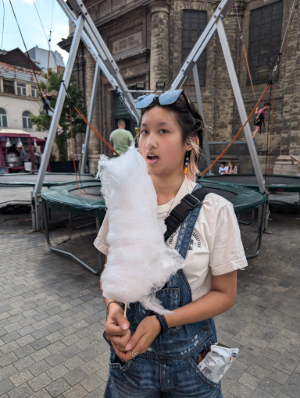

Welcome!

You've reached my not-so-great website about me!
I'm a lot of things
But I'm not a web developer
I'm an Asian American, a beekeeper, a musician, and the youngest child among many other things.
I'm based in Southampton, Massachusetts, and I'm currently a student at the University of Massachusetts Amherst.
I'm a member of the UMass Beekeeping Club and the UMass Asian American Student Association.
Click here for crabs
Feel free to reach out